Head of Growth, Crypto
Lazer Technologies ↗ · Remote
I run crypto at Lazer, one of the most respected product & engineering shops in the space. My job is two things: land partnerships with the best teams in crypto, and make sure we ship product for them that genuinely moves their roadmap forward.
Over the last year I've closed and oversaw engagements with:
CORE COMPETENCIES — PRODUCT LEVEL
Alongside partnership work I scope SDK enhancements for dev tooling — builder code SDKs, wallet SDKs — and consumer-facing programs across stablecoin cards, stablecoin orchestration, consumer marketing experiences, collectible mints, AI content creation automation, prediction markets, perps trading, fungible token trading, staking, DeFi, AI agents, and trading agents. It's the spread I'm strongest across at a product level, and where most of my 0→1 reps live.